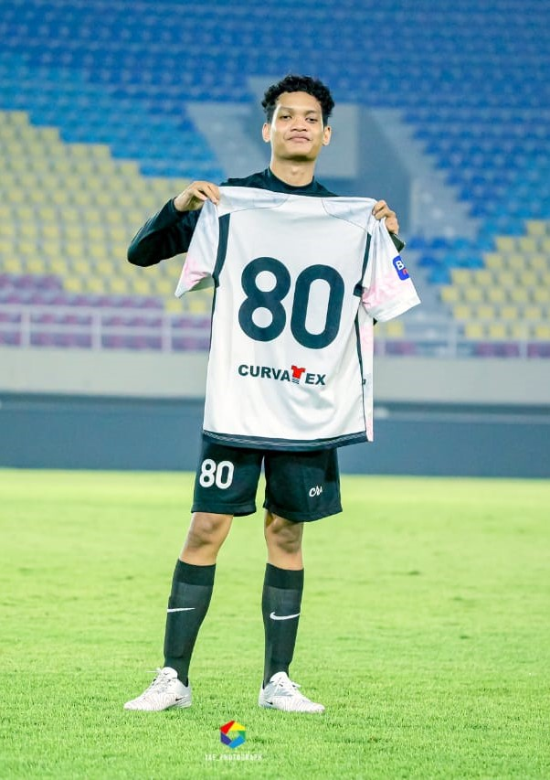

Hai saya Rafllyno, seorang mahasiswa Informatika USD yang sedang belajar menjadi seorang Web Developer. Saat ini, saya sedang menempuh perjalanan akademik sebagai mahasiswa aktif di program studi Informatika, Universitas Sanata Dharma (USD) Yogyakarta, dengan fokus utama pada pengembangan teknologi informasi dan rekayasa perangkat lunak. Didorong oleh rasa ingin tahu yang tinggi terhadap bagaimana dunia digital bekerja, saya mendedikasikan waktu saya untuk bertransformasi menjadi seorang Web Developer yang kompeten, dengan menguasai berbagai instrumen pengembangan seperti HTML, CSS, hingga manajemen basis data dan logika pemrograman Java. Selain fokus pada sisi teknis pemrograman, saya juga memiliki ketertarikan yang besar dalam dunia desain visual dan estetika digital, yang saya salurkan melalui hobi 3D Modeling menggunakan perangkat lunak seperti Blender, SketchUp, dan Revit. Saya percaya bahwa kombinasi antara kemampuan koding yang kuat dan pemahaman desain interior serta modeling akan memungkinkan saya untuk menciptakan pengalaman web yang tidak hanya fungsional secara sistem, tetapi juga indah secara visual. Di luar kesibukan di depan layar monitor, saya adalah pribadi yang aktif dan gemar menjaga keseimbangan hidup dengan berolahraga, mulai dari bermain futsal, sepak bola, hingga hiking di alam terbuka.
